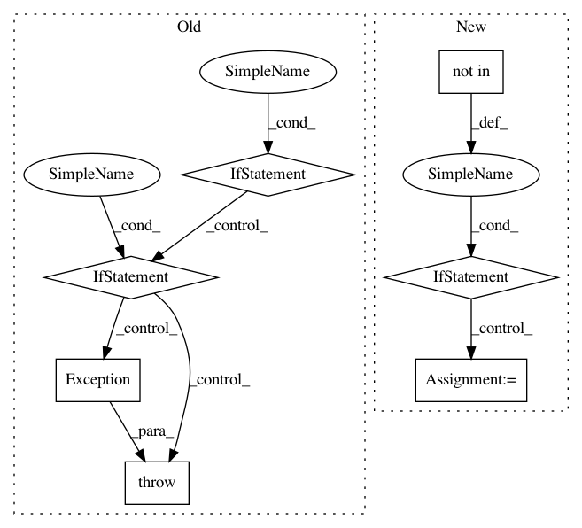

7419eacac2dfa909b280881524e685d7ea4d7ec7,bin/add_attachments.py,,add_attachment,#Any#Any#Any#Any#,50
Before Change
input_file_path = path
detected = filetype.guess(input_file_path)
if detected is None or not detected.mime.endswith(detected.extension):
mime_type = "UNKNOWN" if detected is None else detected.mime
raise Exception(f"{anthology_id} file {path} has MIME type {mime_type}")
if paper_extension not in ALLOWED_TYPES:
raise Exception(f"-> Unknown file extension {paper_extension} for {path}")
// Update XML
xml_file = os.path.join(
os.path.dirname(sys.argv[0]), "..", "data", "xml", f"{collection_id}.xml"
)
tree = ET.parse(xml_file)
paper = tree.getroot().find(f"./volume[@id="{volume_id}"]/paper[@id="{paper_id}"]")
if paper is not None:
// Check if attachment already exists
for attachment in paper.findall("attachment"):
if attachment.text == attachment_file_name:
print(
f"-> attachment {attachment_file_name} already exists in the XML",
file=sys.stderr,
)
break
else:
attachment = ET.Element("attachment")
attachment.attrib["type"] = attach_type.lower()
attachment.text = attachment_file_name
paper.append(attachment)
indent(tree.getroot())
tree.write(xml_file, encoding="UTF-8", xml_declaration=True)
print(
f"-> added attachment {attachment_file_name} to the XML", file=sys.stderr
)
else:
raise Exception(f"Paper {anthology_id} not found in the Anthology")
// Make sure directory exists
if not os.path.exists(output_dir):
// print(f"-> Creating directory {output_dir}", file=sys.stderr)
After Change
file_extension = path.replace("?dl=1", "").split(".")[-1]
// Many links from file sharing services are not informative and don"t have
// extensions, so we could try to guess.
if file_extension not in ALLOWED_TYPES:
detected = filetype.guess(input_file_path)
if detected is not None:
file_extension = detected.mime.split("/")[-1]
if file_extension not in ALLOWED_TYPES:
print(
f"Could not determine file extension for {anthology_id} at {path}",
file=sys.stderr,
)
// Update XML
xml_file = os.path.join(
os.path.dirname(sys.argv[0]), "..", "data", "xml", f"{collection_id}.xml"
)
tree = ET.parse(xml_file)
In pattern: SUPERPATTERN
Frequency: 3
Non-data size: 7
Instances
Project Name: acl-org/acl-anthology
Commit Name: 7419eacac2dfa909b280881524e685d7ea4d7ec7
Time: 2020-04-24
Author: post@cs.jhu.edu
File Name: bin/add_attachments.py
Class Name:
Method Name: add_attachment
Project Name: apple/coremltools
Commit Name: d1e6e624ef891543c5bba32bb0a696d350714693
Time: 2019-08-20
Author: smq@apple.com
File Name: coremltools/models/utils.py
Class Name:
Method Name: _convert_nn_spec_to_half_precision
Project Name: keras-team/keras
Commit Name: ee8ff00a2a8a307c952fb8e7bef241188c7fb12b
Time: 2016-07-03
Author: francois.chollet@gmail.com
File Name: keras/backend/tensorflow_backend.py
Class Name:
Method Name: pool2d